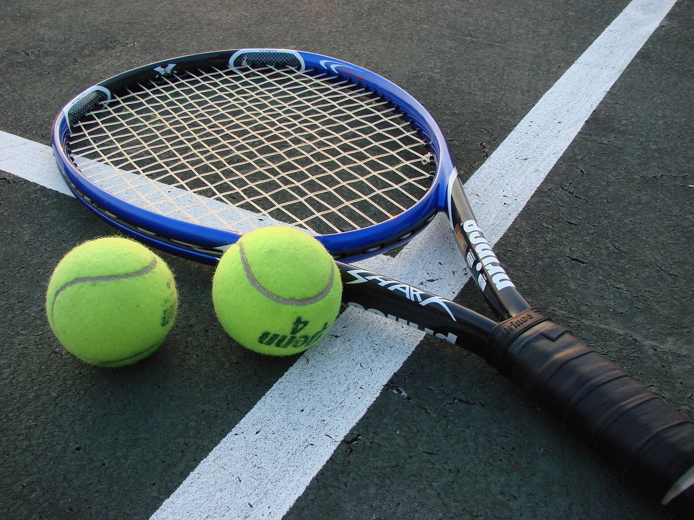
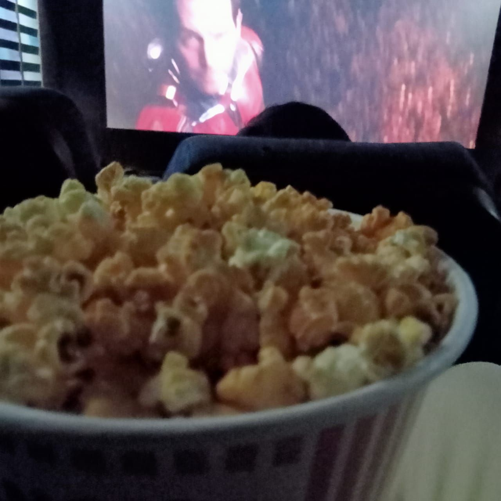
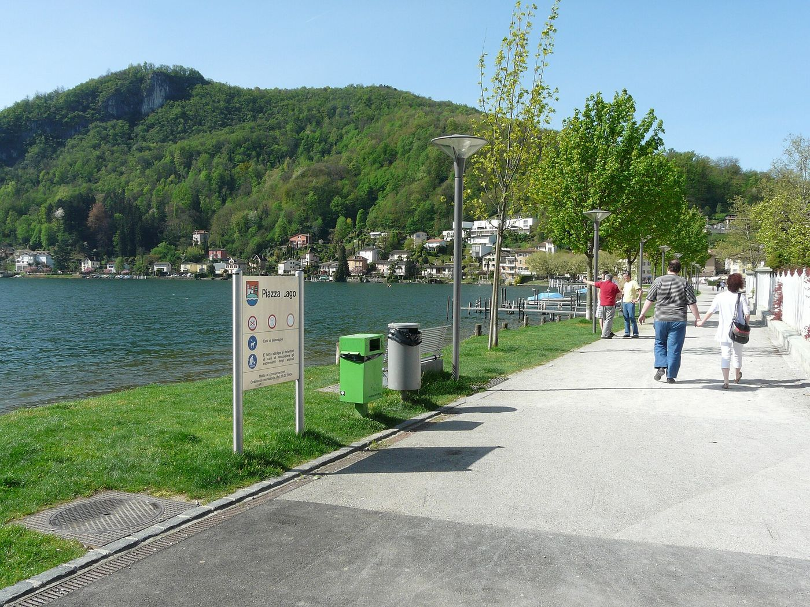
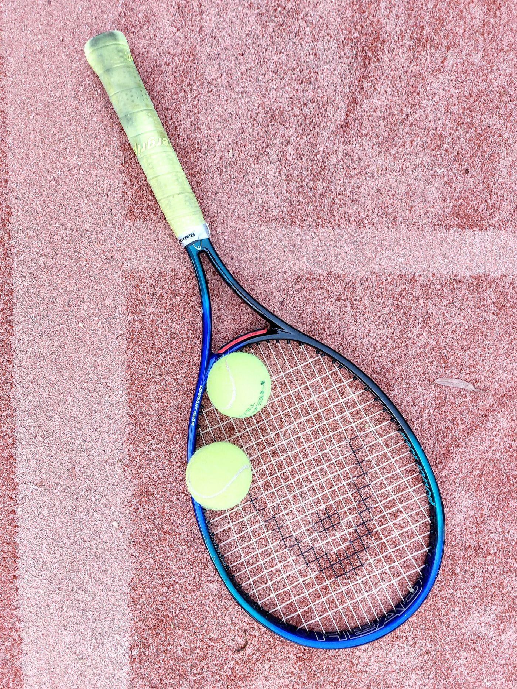

RÉVISION · LEÇON 1
Samedi, j'ai joué au tennis !Être, avoir et le passé composé
Bonjour Nora !
Aujourd'hui, tu révises pour ta vérification : être et avoir, le passé composé avec ses 2 pièces, les participes irréguliers, et comment parler de toi.
Oggi ripassi per la tua verifica: essere e avere, il passato prossimo con i suoi 2 pezzi, i participi irregolari, e come parlare di te.
Samedi, je suis allée au tennis et j'ai gagné mon match !
Sabato sono andata a tennis e ho vinto la mia partita!
▶ Clique pour écouter. Répète la phrase à voix haute.
Clicca per ascoltare. Ripeti la frase ad alta voce.
IT : la traduction en italien. Essaie d'abord sans !
La traduzione in italiano. Prova prima senza!
Après chaque règle, tu t'entraînes : les exercices ressemblent à ceux de ta vérification.
Dopo ogni regola ti eserciti: gli esercizi somigliano a quelli della tua verifica.
★ Tes réponses restent enregistrées. À la fin, « À revoir » te montre les points à retravailler.
Le tue risposte restano salvate. Alla fine, « À revoir » ti mostra i punti da ripassare.

1
Être et avoir : la base de tout
Essere e avere: la base di tutto
Être et avoir au présent
Essere e avere al presente
Ce sont les deux verbes les plus importants : on les utilise partout, et aussi pour faire le passé composé.
Sono i due verbi più importanti: si usano dappertutto, e anche per fare il passato prossimo.
| être | avoir | |
|---|---|---|
| je / j' | je suis | j'ai |
| tu | tu es | tu as |
| il / elle / on | elle est | elle a |
| nous | nous sommes | nous avons |
| vous | vous êtes | vous avez |
| ils / elles | ils sont | ils ont |
Je suis en troisième.
Sono in terza media.
J'ai treize ans.
Ho tredici anni.
Mes amies sont sympas.
Le mie amiche sono simpatiche.
Nous avons un match samedi.
Abbiamo una partita sabato.
💡 En français, on a son âge
Elle a quatorze ans.
Lei ha quattordici anni.
Comme en italien : avoir + l'âge.
Come in italiano: avere + l'età.
C'est, ce sont, sont
C'est, ce sont, sont
Pour présenter une chose ou une personne : c'est. Pour plusieurs : ce sont.
Per presentare una cosa o una persona: c'est. Per più cose o persone: ce sont.
👤 un / une → c'est
C'est mon amie Léa.
È la mia amica Léa.
C'est mon sport préféré.
È il mio sport preferito.
👥 plusieurs → ce sont
Ce sont mes copines de classe.
Sono le mie compagne di classe.
Ce sont mes jeux préférés.
Sono i miei giochi preferiti.
✍️ Après un nom au pluriel → sont
Mes qualités sont la générosité et la gentillesse.
Le mie qualità sono la generosità e la gentilezza.
Mes défauts sont la timidité et la jalousie.
I miei difetti sono la timidezza e la gelosia.
ce tout seul n'est jamais un verbe : on écrit c'est, ce sont ou est / sont.
« ce » da solo non è mai un verbo: si scrive c'est, ce sont oppure est / sont.
1
ÊTRE OU AVOIR ?
Nora, choisis ou écris la bonne forme.
Nora, scegli o scrivi la forma giusta.
1
J'______ treize ans et demi.
Ho tredici anni e mezzo.
✓ J'ai treize ans et demi.
2
Ma sœur et moi, nous ______ au collège à Lugano.
Io e mia sorella siamo alla scuola media a Lugano.
✓ Ma sœur et moi, nous sommes au collège à Lugano.
3
Mes qualités ______ la patience et la gentillesse.
Le mie qualità sono la pazienza e la gentilezza.
✓ Mes qualités sont la patience et la gentillesse.
4
Tu ______ un match de tennis samedi ?
Hai una partita di tennis sabato?
✓ Tu as un match de tennis samedi ?
5
______ mon amie Léa : elle joue au tennis avec moi.
È la mia amica Léa: gioca a tennis con me.
✓ C'est mon amie Léa : elle joue au tennis avec moi.
6
______ mes copines de classe.
Sono le mie compagne di classe.
✓ Ce sont mes copines de classe.
7
Mes parents (être) très gentils.
I miei genitori sono molto gentili.
✓ Mes parents sont très gentils.
8
Vous (avoir) un chien ?
Avete un cane?
✓ Vous avez un chien ?
9
Mes amis (avoir) un nouveau jeu vidéo.
I miei amici hanno un nuovo videogioco.
✓ Mes amis ont un nouveau jeu vidéo.
2
Le passé composé : 2 pièces
Il passato prossimo: 2 pezzi
Le passé composé : toujours 2 pièces
Il passato prossimo: sempre 2 pezzi
Pour raconter une action terminée (hier, samedi dernier, l'été dernier…), il faut toujours deux pièces :
Per raccontare un'azione finita (ieri, sabato scorso, l'estate scorsa…) servono sempre due pezzi:
avoir ou être au présent+participe passé
Samedi, j'ai joué au tennis.
Sabato ho giocato a tennis.
Nous avons visité le musée.
Abbiamo visitato il museo.
Je suis arrivée à huit heures.
Sono arrivata alle otto.
Les élèves sont entrés dans le bus.
Gli alunni sono saliti sull'autobus.
🧩 Une seule pièce, ce n'est pas un passé composé
Le participe tout seul ne suffit pas : nous + avons + visité. Comme en italien : abbiamo visitato.
Il participio da solo non basta: nous + avons + visité. Come in italiano: abbiamo visitato.
La maison d'être : les verbes avec être
La casa di être: i verbi con essere
Ces verbes (surtout des mouvements) font le passé composé avec être :
Questi verbi (soprattutto di movimento) fanno il passato prossimo con être:
aller ↔ venirallé · venu
arriver ↔ partirarrivé · parti
entrer ↔ sortirentré · sorti
monter ↔ descendremonté · descendu
naître ↔ mourirné · mort
tombertombé
resterresté
retourner · rentrerretourné · rentré
Et aussi tous les verbes avec se : je me suis levée, nous nous sommes amusés.
E anche tutti i verbi con « se »: mi sono alzata, ci siamo divertiti.
👧 Avec être, le participe s'accorde avec le sujet
Je suis allée au lac. (Nora)
Sono andata al lago.
Ma classe est arrivée à neuf heures.
La mia classe è arrivata alle nove.
Les garçons sont partis.
I ragazzi sono partiti.
Mes copines sont restées à l'ombre.
Le mie amiche sono rimaste all'ombra.
e = féminin · s = pluriel · es = féminin pluriel
e = femminile · s = plurale · es = femminile plurale
Tous les autres verbes : avoir
Tutti gli altri verbi: avere
Presque tous les verbes font le passé composé avec avoir. Avec avoir, le participe ne change pas.
Quasi tutti i verbi fanno il passato prossimo con avoir. Con avoir il participio non cambia.
jouer, marcher, visiter (-er)→joué, marché, visité
finir, choisir, dormir (-ir)→fini, choisi, dormi
répondre, attendre (-re)→répondu, attendu
elle a mangé · ils ont mangé→pas de changement
Après le repas, nous avons fini nos sandwichs.
Dopo il pranzo abbiamo finito i nostri panini.
La guide a répondu à nos questions.
La guida ha risposto alle nostre domande.
⚠️ Attention : être et avoir prennent avoir
J'ai été malade. · J'ai eu peur.
Sono stata malata. · Ho avuto paura.
En italien on dit sono stata, mais en français : j'ai été.
In italiano si dice « sono stata », ma in francese: j'ai été.
2
ÊTRE OU AVOIR ?
Choisis le bon auxiliaire.
Scegli l'ausiliare giusto.
1
Samedi, je ______ allée au lac avec ma classe.
Sabato sono andata al lago con la mia classe.
✓ Samedi, je suis allée au lac avec ma classe.
2
Nous ______ visité une exposition sur les dinosaures.
Abbiamo visitato una mostra sui dinosauri.
✓ Nous avons visité une exposition sur les dinosaures.
3
Les élèves ______ entrés dans le musée.
Gli alunni sono entrati nel museo.
✓ Les élèves sont entrés dans le musée.
4
Léa ______ mangé une glace à la fraise.
Léa ha mangiato un gelato alla fragola.
✓ Léa a mangé une glace à la fraise.
5
Mes copines ______ restées à l'ombre.
Le mie amiche sono rimaste all'ombra.
✓ Mes copines sont restées à l'ombre.
6
La journée ______ été super !
La giornata è stata fantastica!
✓ La journée a été super !
3
LES 2 PIÈCES
Écris le verbe au passé composé (auxiliaire + participe).
Scrivi il verbo al passato prossimo (ausiliare + participio).
1
Hier, Nora (jouer) au tennis.
Ieri Nora ha giocato a tennis.
✓ Hier, Nora a joué au tennis.
2
Ma classe (arriver) à Lugano à neuf heures.
La mia classe è arrivata a Lugano alle nove.
✓ Ma classe est arrivée à Lugano à neuf heures.
3
Vers midi, nous (marcher) jusqu'au parc.
Verso mezzogiorno abbiamo camminato fino al parco.
✓ Vers midi, nous avons marché jusqu'au parc.
4
Après le repas, nous (finir) nos sandwichs.
Dopo il pranzo abbiamo finito i nostri panini.
✓ Après le repas, nous avons fini nos sandwichs.
5
Lucas et Noah (rester) dans le bus.
Lucas e Noah sono rimasti sull'autobus.
✓ Lucas et Noah sont restés dans le bus.
6
Les filles (partir) à cinq heures.
Le ragazze sono partite alle cinque.
✓ Les filles sont parties à cinq heures.
7
Tu (répondre) au message de ton coach ?
Hai risposto al messaggio del tuo allenatore?
✓ Tu as répondu au message de ton coach ?
🗣️ À toi de parler !
Réponds à voix haute avec une phrase complète. Les débuts de phrase t'aident : clique pour les écouter. Puis compare avec l'exemple.
Rispondi ad alta voce con una frase completa. Gli inizi di frase ti aiutano: clicca per ascoltarli. Poi confronta con l'esempio.
1
Qu'est-ce que tu as fait samedi dernier ? Dis deux choses.
Che cosa hai fatto sabato scorso? Di' due cose.
Pour t'aider :
Exemple de réponse
Samedi, j'ai joué au tennis avec Léa. Le soir, je suis allée chez ma grand-mère.
Sabato ho giocato a tennis con Léa. La sera sono andata da mia nonna.
2
Raconte ta dernière sortie avec l'école.
Racconta la tua ultima uscita con la scuola.
Pour t'aider :
Exemple de réponse
Nous sommes partis en bus à huit heures. Nous avons visité un musée et nous avons mangé au bord du lac.
Siamo partiti in autobus alle otto. Abbiamo visitato un museo e abbiamo mangiato in riva al lago.

3
Les participes irréguliers
I participi irregolari
Les participes irréguliers à connaître par cœur
I participi irregolari da sapere a memoria
Ces participes ne suivent pas la règle. On les apprend par familles : c'est plus facile !
Questi participi non seguono la regola. Si imparano per famiglie: è più facile!
en -u
avoireu
lirelu
voirvu
pouvoirpu
vouloirvoulu
boirebu
venirvenu
en -is
prendrepris
apprendreappris
comprendrecompris
mettremis
en -it
diredit
écrireécrit
fairefait
en -ert
ouvrirouvert
offriroffert
découvrirdécouvert
spécial
êtreété
naîtrené
🔁 Le participe ne ressemble pas au présent
aujourd'hui je lis→hier j'ai lu
je vois→j'ai vu
je prends→j'ai pris
je mets→j'ai mis
j'ouvre→j'ai ouvert
je peux→j'ai pu
je veux→j'ai voulu
je suis→j'ai été
Hier soir, j'ai vu un film au cinéma.
Ieri sera ho visto un film al cinema.
Mon coach a pris des photos du match.
Il mio allenatore ha fatto delle foto della partita.
Nous avons mis les boissons sur la table.
Abbiamo messo le bibite sul tavolo.
Lucas a ouvert les sacs.
Lucas ha aperto gli zaini.
J'ai écrit un message à Léa.
Ho scritto un messaggio a Léa.
Elle n'a pas pu venir.
Non è potuta venire.
4
LE BON PARTICIPE
Choisis le participe passé.
Scegli il participio passato.
1
Hier soir, j'ai ______ un film d'aventure. (voir)
Ieri sera ho visto un film d'avventura.
✓ Hier soir, j'ai vu un film d'aventure.
2
Nora a ______ un livre en anglais. (lire)
Nora ha letto un libro in inglese.
✓ Nora a lu un livre en anglais.
3
Mon père a ______ beaucoup de photos. (prendre)
Mio padre ha fatto molte foto.
✓ Mon père a pris beaucoup de photos.
4
Nous avons ______ nos raquettes dans le sac. (mettre)
Abbiamo messo le racchette nella borsa.
✓ Nous avons mis nos raquettes dans le sac.
5
Le prof a ______ la fenêtre. (ouvrir)
Il prof ha aperto la finestra.
✓ Le prof a ouvert la fenêtre.
6
Je n'ai pas ______ venir à la fête. (pouvoir)
Non sono potuta venire alla festa.
✓ Je n'ai pas pu venir à la fête.
7
Elle a ______ acheter un souvenir. (vouloir)
Ha voluto comprare un souvenir.
✓ Elle a voulu acheter un souvenir.
8
La sortie a ______ très intéressante. (être)
L'uscita è stata molto interessante.
✓ La sortie a été très intéressante.
9
Nous avons ______ beaucoup de choses à raconter. (avoir)
Abbiamo avuto molte cose da raccontare.
✓ Nous avons eu beaucoup de choses à raconter.
5
À TOI D'ÉCRIRE
Écris le verbe au passé composé.
Scrivi il verbo al passato prossimo.
1
Hier, Nora (écrire) un message à sa copine.
Ieri Nora ha scritto un messaggio alla sua amica.
✓ Hier, Nora a écrit un message à sa copine.
2
Mon frère (faire) ses devoirs.
Mio fratello ha fatto i compiti.
✓ Mon frère a fait ses devoirs.
3
La prof (dire) « Bravo ! ».
La prof ha detto « Brava! ».
✓ La prof a dit « Bravo ! ».
4
Tu (comprendre) l'exercice ?
Hai capito l'esercizio?
✓ Tu as compris l'exercice ?
5
Nous (boire) un chocolat chaud.
Abbiamo bevuto una cioccolata calda.
✓ Nous avons bu un chocolat chaud.
6
Ils (voir) un match de hockey à Lugano.
Hanno visto una partita di hockey a Lugano.
✓ Ils ont vu un match de hockey à Lugano.
6
LES MOTS DANS L'ORDRE
Fais une phrase au passé composé.
Fai una frase al passato prossimo.
1
Remets les mots dans l'ordre.
Sabato sono andata a tennis.
✓ Samedi, je suis allée au tennis.
2
Remets les mots dans l'ordre.
Abbiamo visto un film al cinema.
✓ Nous avons vu un film au cinéma.
3
Remets les mots dans l'ordre.
Gli alunni sono partiti in autobus.
✓ Les élèves sont partis en bus.

4
Comme à la vérification : une journée à raconter
Come nella verifica: una giornata da raccontare
Lis l'histoire de Giulia. Pour chaque phrase, écris le verbe au passé composé. Attention : être ou avoir ?
Leggi la storia di Giulia. Per ogni frase scrivi il verbo al passato prossimo. Attenzione: être o avoir?
7
UNE JOURNÉE À LUGANO
Complète l'histoire de Giulia avec les verbes au passé composé.
Completa la storia di Giulia con i verbi al passato prossimo.
1
Dimanche dernier, ma famille et moi, nous (partir) tôt.
Domenica scorsa io e la mia famiglia siamo partiti presto.
✓ Dimanche dernier, ma famille et moi, nous sommes partis tôt.
2
Nous (prendre) le train pour Lugano.
Abbiamo preso il treno per Lugano.
✓ Nous avons pris le train pour Lugano.
3
Mon petit frère (dormir) pendant le trajet.
Il mio fratellino ha dormito durante il viaggio.
✓ Mon petit frère a dormi pendant le trajet.
4
Ma mère (faire) des photos du lac.
Mia madre ha fatto delle foto del lago.
✓ Ma mère a fait des photos du lac.
5
À midi, j'(choisir) une pizza.
A mezzogiorno ho scelto una pizza.
✓ À midi, j'ai choisi une pizza.
6
L'après-midi, mes parents (visiter) un musée.
Il pomeriggio i miei genitori hanno visitato un museo.
✓ L'après-midi, mes parents ont visité un musée.
7
Moi, je (rester) au parc avec mon frère.
Io sono rimasta al parco con mio fratello.
✓ Moi, je suis restée au parc avec mon frère.
8
Le soir, nous (rentrer) fatigués.
La sera siamo tornati a casa stanchi.
✓ Le soir, nous sommes rentrés fatigués.
9
Mais la journée (être) super !
Ma la giornata è stata fantastica!
✓ Mais la journée a été super !
Écouter toute l'histoire
Dimanche dernier, ma famille et moi, nous sommes partis tôt. Nous avons pris le train pour Lugano. Mon petit frère a dormi pendant le trajet. À Lugano, nous avons marché au bord du lac et ma mère a fait des photos. À midi, j'ai choisi une pizza. L'après-midi, mes parents ont visité un musée, mais moi, je suis restée au parc avec mon frère. Le soir, nous sommes rentrés fatigués, mais la journée a été super !
Domenica scorsa io e la mia famiglia siamo partiti presto. Abbiamo preso il treno per Lugano. Il mio fratellino ha dormito durante il viaggio. A Lugano abbiamo camminato in riva al lago e mia madre ha fatto delle foto. A mezzogiorno ho scelto una pizza. Il pomeriggio i miei genitori hanno visitato un museo, ma io sono rimasta al parco con mio fratello. La sera siamo tornati a casa stanchi, ma la giornata è stata fantastica!
5
Parler de moi
Parlare di me
Mon, ma, mes
Mio, mia, miei, mie
Le possessif change selon le nom qui suit : masculin, féminin ou pluriel.
Il possessivo cambia secondo il nome che segue: maschile, femminile o plurale.
| masculin | féminin | pluriel |
|---|---|---|
| mon frère | ma sœur | mes parents |
| mon sport préféré | ma matière préférée | mes qualités, mes défauts |
| ton coach | ta raquette | tes activités |
| son livre | sa famille | ses vacances |
🔤 Devant une voyelle : mon, même au féminin
mon amie Léa · mon école · mon activité préférée
la mia amica Léa · la mia scuola · la mia attività preferita
Ma matière préférée, c'est l'anglais.
La mia materia preferita è l'inglese.
Mes vacances de rêve ? Un voyage à New York !
Le mie vacanze da sogno? Un viaggio a New York!
Je suis une fille : l'adjectif au féminin
Sono una ragazza: l'aggettivo al femminile
généreux→généreuse
jaloux→jalouse
curieux→curieuse
paresseux→paresseuse
sportif→sportive
gentil→gentille
bavard→bavarde
timide→timide
Je suis généreuse et gentille, mais un peu timide.
Sono generosa e gentile, ma un po' timida.
🔊 Le son [ʒ] de « je » devant a, o, ou, u : j
je joue · jaloux · juste · aujourd'hui · les jeux vidéo
io gioco · geloso · giusto · oggi · i videogiochi
Devant e et i, on peut aussi écrire g : généreuse, la géographie, la gymnastique.
Davanti a e e i si può anche scrivere g: generosa, la geografia, la ginnastica.
8
MON PROFIL
Choisis ou écris la bonne forme.
Scegli o scrivi la forma giusta.
1
______ matière préférée, c'est l'anglais.
La mia materia preferita è l'inglese.
✓ Ma matière préférée, c'est l'anglais.
2
______ défauts sont la timidité et la jalousie.
I miei difetti sono la timidezza e la gelosia.
✓ Mes défauts sont la timidité et la jalousie.
3
______ sport préféré, c'est le tennis.
Il mio sport preferito è il tennis.
✓ Mon sport préféré, c'est le tennis.
4
______ amie Léa joue aussi au tennis.
La mia amica Léa gioca anche lei a tennis.
✓ Mon amie Léa joue aussi au tennis.
5
______ vacances de rêve ? Un voyage aux États-Unis !
Le mie vacanze da sogno? Un viaggio negli Stati Uniti!
✓ Mes vacances de rêve ? Un voyage aux États-Unis !
6
Je suis très ______ avec mes amis. (généreux)
Sono molto generosa con i miei amici.
✓ Je suis très généreuse avec mes amis.
7
Parfois, je suis un peu ______. (jaloux)
A volte sono un po' gelosa.
✓ Parfois, je suis un peu jalouse.
8
Le samedi, je (jouer) au tennis.
Il sabato gioco a tennis.
✓ Le samedi, je joue au tennis.
9
Ma sœur est très (sportif) .
Mia sorella è molto sportiva.
✓ Ma sœur est très sportive.
✍️ À toi d'écrire : mon profil
Écris ton profil (6 phrases) : 2 qualités, 2 défauts, tes activités et tes goûts, ta matière préférée ou tes vacances de rêve. Ajoute une phrase au passé composé.
Scrivi il tuo profilo (6 frasi): 2 qualità, 2 difetti, le tue attività e i tuoi gusti, la tua materia preferita o le tue vacanze da sogno. Aggiungi una frase al passato prossimo.
Pour t'aider :
✔ Vérifie ton texte
- ✔J'ai écrit ma (féminin), mon (masculin) et mes (pluriel).Ho scritto ma, mon e mes.
- ✔Après « mes qualités », « mes défauts » : sont.Dopo « mes qualités », « mes défauts »: sont.
- ✔Mes adjectifs sont au féminin (généreuse, jalouse…).I miei aggettivi sono al femminile.
- ✔J'ai une phrase au passé composé avec 2 pièces.Ho una frase al passato prossimo con 2 pezzi.
Exemple de texte
Je m'appelle Nora et j'ai treize ans. Je suis généreuse et gentille, mais je suis aussi un peu timide. Mes défauts sont la jalousie et la paresse le dimanche ! Je joue au tennis et j'aime les jeux vidéo. Ma matière préférée, c'est l'anglais. Mes vacances de rêve, c'est un voyage à New York. L'été dernier, je suis allée à la mer et j'ai fait du paddle.
Mi chiamo Nora e ho tredici anni. Sono generosa e gentile, ma sono anche un po' timida. I miei difetti sono la gelosia e la pigrizia la domenica! Gioco a tennis e mi piacciono i videogiochi. La mia materia preferita è l'inglese. Le mie vacanze da sogno sono un viaggio a New York. L'estate scorsa sono andata al mare e ho fatto paddle.

★
Mes phrases utiles
Le mie frasi utili
Écoute et répète ces phrases. Elles t'aident le jour de la vérification !
Ascolta e ripeti queste frasi. Ti aiutano il giorno della verifica!
J'ai treize ans et je suis en troisième.
Ho tredici anni e sono in terza media.
Mes qualités sont la générosité et la gentillesse.
Le mie qualità sono la generosità e la gentilezza.
Ma matière préférée, c'est l'anglais.
La mia materia preferita è l'inglese.
Samedi, je suis allée au tennis.
Sabato sono andata a tennis.
Nous avons visité un musée.
Abbiamo visitato un museo.
J'ai vu un film et j'ai lu un livre.
Ho visto un film e ho letto un libro.
Nous avons pris le train.
Abbiamo preso il treno.
La journée a été super !
La giornata è stata fantastica!
★
À revoir
Da ripassare
Clique sur le lien pour relire la règle, puis écoute la bonne phrase et répète-la.
Clicca sul link per rileggere la regola, poi ascolta la frase giusta e ripetila.
Pas encore d'erreur. Les points à revoir apparaissent ici quand tu fais les exercices.
| Ex. | La bonne réponse | Ma réponse | La règle |
|---|